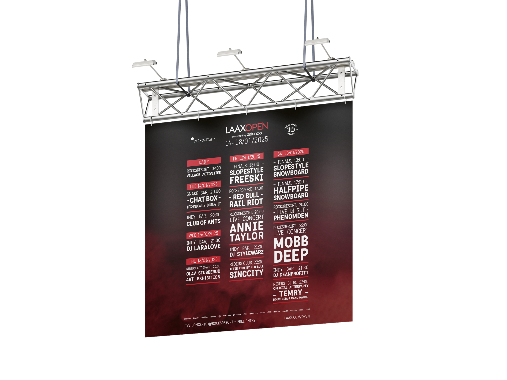
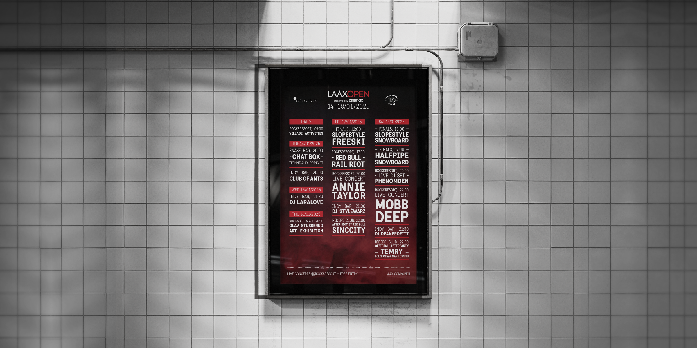

Laax Open
2025
Das Ziel dieses Projekts besteht darin, die Programm-Highlights des Laax Open Weekends visuell ansprechend und übersichtlich zu gestalten. Dabei ist die Laax Open Designsprache zu befolgen, und das Design sollte der Version von 2024 ähneln. Das Design wird sowohl vor Ort als auch im Rahmen der Werbung neuer Gäste (F12- Werbung am Bahnhof Chur und in der Region) eingesetzt.
MEINE ROLLE
Adaptieren des Grunddesigns von 2024, Einhaltung der Laax Open Designsprache, Gestaltung der Programme in den vorgegebenen Formaten (A2 und F12), Bearbeitung der ausgewählten Materialien (Bilder) sowie Layout der Logoleiste und anderer visueller Elemente.
ZIELGRUPPE
Gäste vor Ort, die das Laax Open 25 erleben, sowie potenzielle Besucherinnen und Besucher, die durch Werbung im Bahnhof Chur und in der Region angezogen werden sollen.
SCHWIERIGKEIT
Sicherstellung der Übersichtlichkeit der Visuals trotz einer grossen Menge an Informationen, Einhaltung der spezifischen Vorgaben der APG für die F12-Werbung und die Balance zwischen ansprechendem Design und funktionaler Information für die Gäste.


DAS ERGEBNIS
Die Programm-Visuals wurden erfolgreich angepasst, sodass sie sowohl informativ als auch visuell ansprechend sind. Das Design orientiert sich an der für die Laax Open 2024 festgelegten Designsprache und entspricht den Anforderungen der F12-Werbung sowie der A2-Plakate. Das Feedback fiel durchweg positiv aus, insbesondere in Bezug auf Klarheit und ansprechende Darstellung der Programmpunkte.
